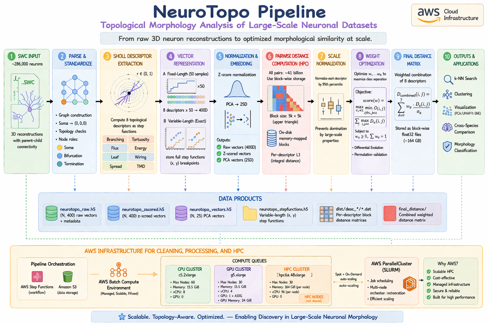
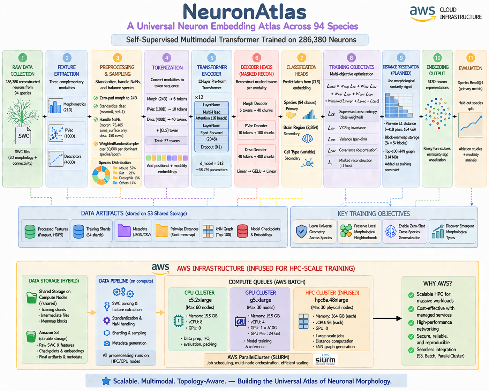
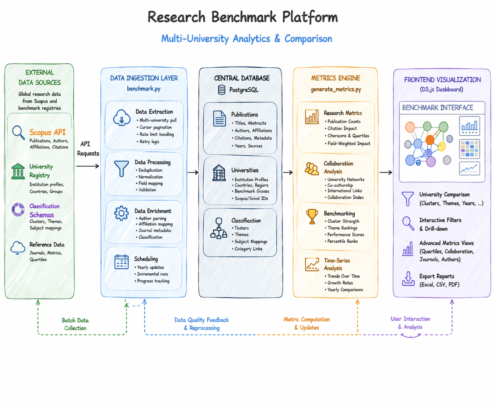
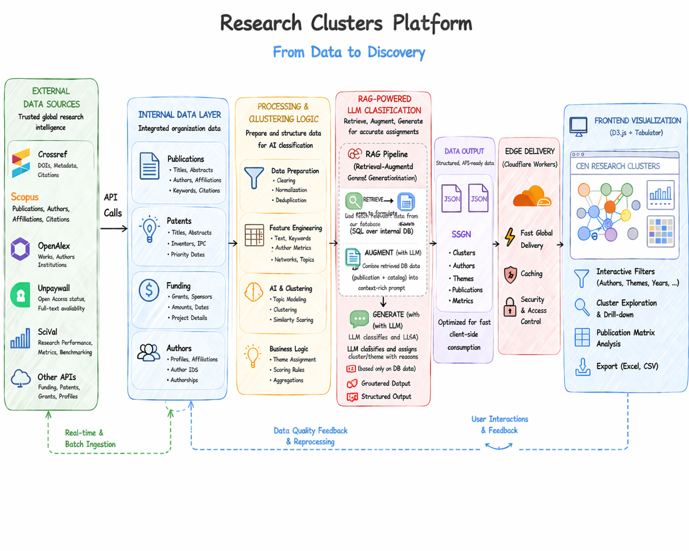
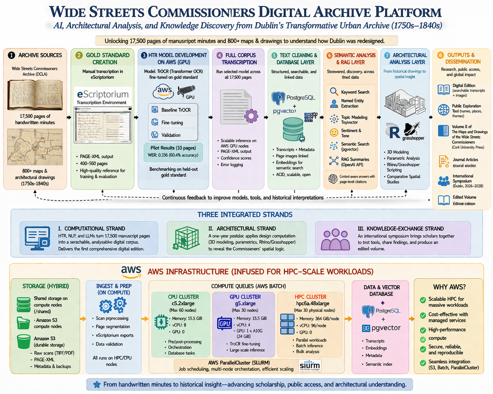

Data Engineer · ML Practitioner · AI Systems Architect · Researcher

End-to-end HPC pipeline processing ~286,000 reconstructed neurons (SWC format) to compute 8 topological Sholl descriptors and produce a 286,000×286,000 pairwise distance matrix (~164 GB, ~41 billion unique pairs) with O(1) lookup. Descriptor weights optimized via differential evolution over labeled neuronal classes. Published in PLOS Computational Biology Q1 (25 citations).

Self-supervised multimodal Transformer (12 layers, d=512, ~48.2M parameters) trained on 286,380 morphologically reconstructed neurons across 94 species. Learns a species-agnostic representation space enabling cross-species retrieval, morphological type discovery, and cell-type classification. Targeting Nature / Nature Methods publication.

University-wide research intelligence platform integrating Scopus, SciVal, OpenAlex, Crossref, and Unpaywall into a centralized PostgreSQL data warehouse. Provides senior leadership with live benchmarking against regional and global peer institutions — measuring publication output, journal quality (quartiles), collaboration networks, author productivity, and research trend forecasting — via interactive D3.js dashboards.

AI-powered pipeline applying dimensionality reduction (PCA) and unsupervised clustering to institutional publication corpora — mapping the research landscape to identify thematic strengths, gaps, and collaboration opportunities. Feeds into the benchmark dashboard for strategic foresight.
Production full-stack Django/PostgreSQL application centralizing all academic outreach, industry partnerships, MOUs, research projects, senior design sponsorships, executive education, internships, and faculty/industry contacts across 6 engineering departments — replacing scattered spreadsheets with a single queryable platform with semantic search and interactive analytics.
GenericForeignKeyis_lead flag — zero double-counting across all dashboard panelsall-MiniLM-L6-v2 (384-dim) + fuzzy matching at save timeAuditedModel base classFull migration of a legacy Visual Basic inventory management system into a modern, client-side decision-support web application. Supports 10+ deterministic and stochastic OR models — including dynamic lot sizing, joint replenishment, quantity discount, continuous/periodic review, and newsvendor — with all computation executing entirely in the browser. Deployed as an offline-capable PWA with zero backend dependency.

End-to-end Handwritten Text Recognition pipeline to digitize the Dublin Wide Streets Commissioners archive — 17,500 pages of 18th-century handwritten manuscripts. Achieved 86.4% character accuracy (CER 0.136) on pilot. Produced gold-standard PAGE-XML training datasets establishing the foundation for the first fully searchable digital edition of the archive.
Data engineer, machine learning practitioner, and AI systems architect with expertise spanning the full ML lifecycle — from distributed data pipeline design and large-scale processing to model training, productionization, and MLOps. Experienced deploying production AI platforms, institutional analytics systems, and research-grade ML infrastructure across cloud and on-premise environments.
Active researcher with peer-reviewed publications in Scopus-indexed Q1 journals — Google Scholar ↗